MLA（Multi-Head Latent Attention）是 DeepSeek-V2/V3 的注意力结构：用一份压缩 latent 替代完整 K/V，达到"以算换存"。它在推理时有两种数学等价的形态，区别只在"KV 上采样放哪"：
| 非吸收矩阵版（compute-friendly） | 吸收矩阵版（data-movement-friendly） | |
|---|---|---|
| 上采样位置 | cache 之后（attention 前，对全量 KV 上采样成每头 k_nope/v） | 拆成两个：W_UK_T 移到 Q 侧、W_UV 移到 O 侧 |
| attention 形态 | MHA（Q/K head dim = P+R = 192） | MQA（Q/K head dim = Lkv+R = 576，单 head） |
| 物化 K/V | 是（上采样出完整 K/V） | 否（只搬 latent） |
| 适用阶段 | Prefill（seq_len 大） | Decode（seq_len=1、cache 长） |
| 权重加载 | 完全相同——仅 KV 上采样权重 W_UK/W_UV 做 reshape/转置（W_UK_T=permute、W_UV=transpose） | |
diff = 非吸收 − 吸收。Prefill（cache_len=0）时 diff<0 → 非吸收更省算力；Decode（seq_len=1）时 diff>0 → 吸收更省。vLLM 正是按 prefill/decode 标签硬编码选择（§6）。MHA 里每个 head 有独立的 Q/K/V；MLA 把 K/V（以及 Q）压成一个共享的压缩 latent，需要时再上采样出来。数学上等于对大矩阵做低秩分解：
A[m,n] = B[m,r] × C[r,n]， 一般 r << m,n
元素数从 m×n 降到 (m+n)×r → 省存储（KV cache 只剩 latent）具体到 MHA→MLA 的变化点：原计算矩阵拆成 W_D（向下投影）和 W_U（向上投影）；K/V 投影合在一起算；KV cache 变成 k_pe + compress_kv；RoPE 的作用位置调整。
公式对照（把 MHA 的每个大矩阵低秩分解成 W_D × W_U）：
# MHA（每头独立，K/V cache 是完整 per-head）
K = h_t @ W_K # [Sq, N, head_dim] 每头一份
V = h_t @ W_V # KV cache 存完整 K/V，每层每头（16384 维/token）
# MLA（W_K 拆成 下行 W_DKV × 上行 W_UK，KV cache 只存共享压缩态）
kv_c = h_t @ W_DKV # [Sq, Lkv=512] 共享压缩 latent
k_pe = RoPE(h_t @ W_KR) # [Sq, R=64] 解耦 RoPE
k_nope = (kv_c @ W_UK.view(Lkv, N*P)).view(Skv,N,P) # W_K ≈ W_DKV @ W_UK（低秩分解）
v = (kv_c @ W_UV.view(Lkv, N*V)).view(Skv,N,V) # W_V ≈ W_DKV @ W_UV
# 关键：KV cache 只存 kv_c(512)+k_pe(64)=576 维/token，替代每头 K/V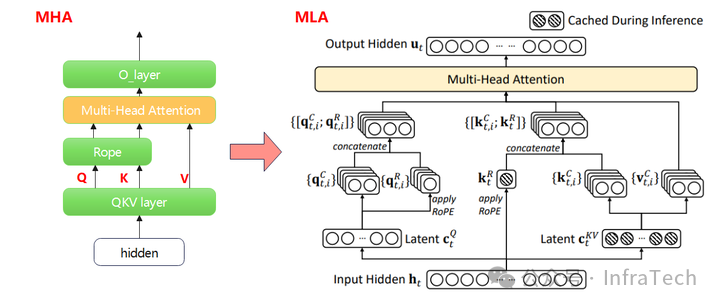
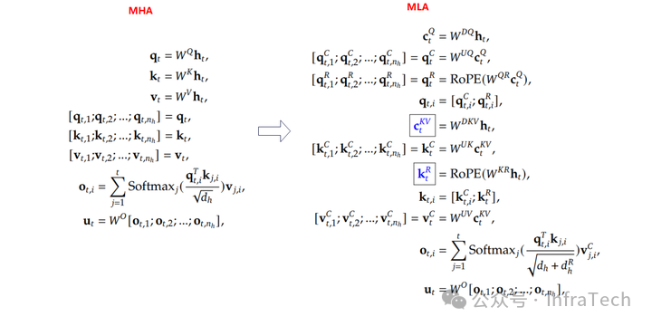
q_t=W^Q h_t 等；MLA 侧 q 有上下采样（W^DQ/W^UQ、RoPE）、KV 是 compress_kv / k_pe（蓝色框=需缓存），attention 的 O_t,l 对 v_c^KV 求和。这是 §2 两条计算流背后逐变量的公式基础。| 符号 | 含义 | DSV3 值 | 符号 | 含义 | DSV3 值 |
|---|---|---|---|---|---|
| H | hidden 大小 | 7168 | N | attention 头数 | 128 |
| Lq | Q latent 维 | 1536 | Lkv | K/V latent 维 | 512 |
| P | qk_nope 维（无 RoPE） | 128 | R | qk_rope 维（进 RoPE） | 64 |
| V | V head dim | 128 | Skv | KV 序列长（= C + Sq） | — |
| C | context 长（= Skv − Sq） | — | Sq | Q 序列长 | — |
| 权重 | 作用 | 形状 | 权重 | 作用 | 形状 |
|---|---|---|---|---|---|
| W_DQ | h → q_c（Q 下行） | [H, Lq] | W_DKV | h → kv_c（KV 下行） | [H, Lkv] |
| W_UQ | q_c → q_nope（Q 上行） | [Lq, N*P] | W_KR | h → k_pe | [H, R] |
| W_QR | q_c → q_pe（Q 上行） | [Lq, N*R] | W_UV | kv_c → v（KV 上行） | [Lkv, N, V] |
| W_O | attention 输出 → h | [N*V, H] | W_UK | kv_c → k_nope（KV 上行） | [Lkv, N, P] |
forward_mha，compute-friendly）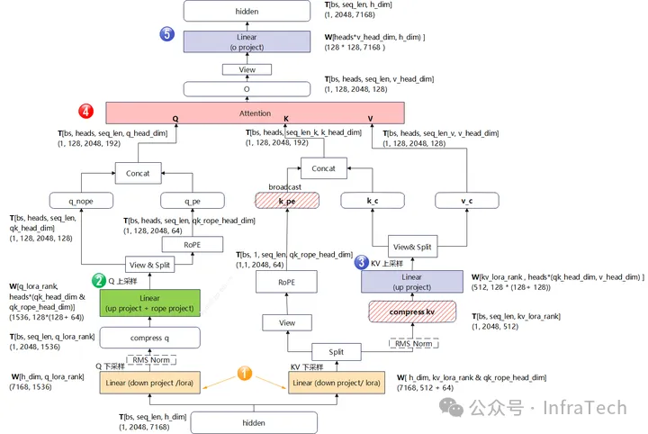
公式（mla_attention.py:66-86 伪代码，batch=1）：
q_c = h_t @ W_DQ [Sq, Lq]
q_nope = (q_c @ W_UQ).view(Sq, N, P) [Sq, N, P]
q_pe = RoPE(q_c @ W_QR).view(Sq, N, R) [Sq, N, R]
new_kv_c = h_t @ W_DKV [Sq, Lkv]
new_k_pe = RoPE(h_t @ W_KR) [Sq, R]
kv_c = cat([new_kv_c, cache_kv_c]) [Skv, Lkv]
k_pe = cat([new_k_pe, cache_k_pe]) [Skv, R]
k_nope = (kv_c @ W_UK.view(Lkv, N*P)).view(Skv, N, P) [Skv, N, P] ← 对全量 KV 上采样
v = (kv_c @ W_UV.view(Lkv, N*V)).view(Skv, N, V) [Skv, N, V]
sdpa_o = sdpa(cat([q_nope,q_pe]), cat([k_nope,k_pe.expand(-1,N,-1)]), v) MHA
return sdpa_o @ W_O [Sq, H]forward_mqa，data-movement-friendly）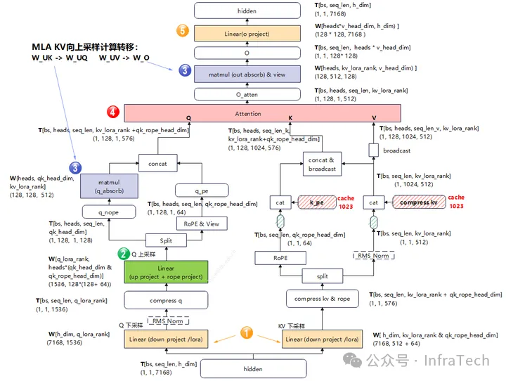
公式（mla_attention.py:94-118 伪代码）：
q_c = h_t @ W_DQ
q_nope = (q_c @ W_UQ).view(Sq, N, P) [Sq, N, P]
q_pe = RoPE(q_c @ W_QR).view(Sq, N, R)
ql_nope = einsum("snh,lnh->snl", q_nope, W_UK) [Sq, N, Lkv] ← 吸收：q 进 latent，代替 k_nope 上采样
new_kv_c = h_t @ W_DKV
new_k_pe = RoPE(h_t @ W_KR)
kv_c = cat([new_kv_c, cache_kv_c]) [Skv, Lkv] 直接当 K/V
k_pe = cat([new_k_pe, cache_k_pe])
sdpa_o = sdpa(cat([ql_nope, q_pe]), cat([kv_c, k_pe]), kv_c) MQA（K/V head dim = Lkv = 512）
o = einsum("snl,lnv->snv", sdpa_o, W_UV) [Sq, N, V] ← 吸收：attention 输出上采样回 v
return o.view(-1, N*V) @ W_O关键点：吸收版里 kv_c 从头到尾没有变成每头的 k_nope/v——它一直以 latent（512 维，单 head 共享）的形态参与 attention。这就是"不物化完整 K/V"。
| 步骤 | 非吸收（prefill，Sq=2048, cache=0） | 吸收（decode，Sq=1, cache=1023） |
|---|---|---|
| q_c | [1, 2048, 1536] | [1, 1, 1536] |
| q_nope + q_pe | [1, 2048, 128, 192] | [1, 1, 128, 192] |
| ql_nope（吸收侧） | — | [1, 1, 128, 512] |
| kv_c / k_pe | [1, 2048, 512] / [1, 2048, 64] | [1, 1024, 512] / [1, 1024, 64] |
| k_nope / v（非吸收侧） | [1, 2048, 128, 256] | — |
| attention | MHA：Q=[P+R]=192 对 K=[P+R]=192 | MQA：Q=[Lkv+R]=576 对 K=[Lkv+R]=576，单 head |
| sdpa_o | [1, 2048, 128, 128] | [1, 1, 128, 512]（再 ×W_UV → 128） |
| out | [1, 2048, 7168] | [1, 1, 7168] |
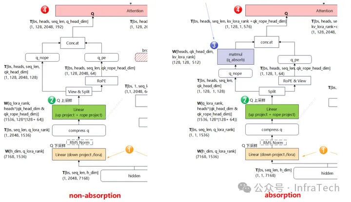
Linear (up project) 上采样；右（absorption）③ 变成 matmul (q_absorb)，且多出 matmul (out absorb)&view。一眼看出"上采样移到了哪"。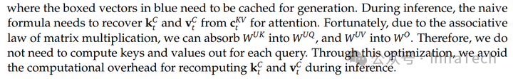
W^UK 吸收进 W^UQ、W^UV 吸收进 W^O，从而无需对每个 query 重新计算 key/value，避免推理时重建 k_t^c、v_t^c 的开销。"| 通道 | 非吸收 | 吸收 | 本质差异 |
|---|---|---|---|
| Q | q_nope 直接进 MHA | 多一个矩阵乘：q_nope × W_UK → ql_nope（进 latent） | 消除 KV 上采样的另一种等价表达 |
| KV | 先上采样（kv_c×W_UK/W_UV → k_nope/v）再 attention | 不上采样，kv_c 直接用 | 吸收把"上采样"换成了"q 侧 + O 侧的两次小矩阵乘" |
| O | sdpa_o 直接 × W_O | 多一个矩阵乘：sdpa_o × W_UV → v，再 × W_O | latent 输出恢复到 v 空间 |
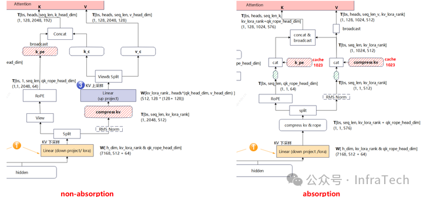
Linear (up project) 把 compress_kv 上采样成每头 K/V；吸收侧 kv_c（cache 1023）直接进 attention，③ 标注 W[kv_lora_rank, heads*(qk_head_dim+v_head_dim)] 只在吸收时转置/拆成 W_UK_T / W_UV。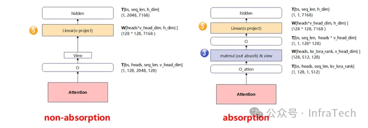
Linear (o project) 直接出；吸收多一个 ③ matmul (out absorb)&view（W[heads, kv_lora_rank, v_head_dim]）再进 o project。以下用 DeepSeek-V3 参数（bs=1, heads=128, qk_nope=128, qk_rope=64, kv_lora=512, h=7168, q_lora=1536, v_head=128），假设 attention 未开 causal_mask（开 causal_mask 曲线会变，本文取上界）。
# ========== 非吸收矩阵 flops（逐项）==========
# Q 通道
q_down_proj = 2*bs*seq_len*h*q_lora_rank
q_up_proj = 2*bs*seq_len*q_lora_rank*heads*(qk_head_dim + qk_rope_head_dim)
q_linear = q_down_proj + q_up_proj
# KV 通道（关键：kv_up_proj 对全量 KV 上采样）
kv_down_proj = 2*bs*seq_len*h*(kv_lora_rank + qk_rope_head_dim)
kv_up_proj = 2*bs*heads*(seq_len+cache_len)*kv_lora_rank*(qk_head_dim + v_head_dim) # ← decode 时 cache_len 巨大，贵
kv_linear = kv_down_proj + kv_up_proj
# attention
kv_scores = 2*bs*heads*seq_len*(seq_len+cache_len)*(qk_head_dim + qk_rope_head_dim)
qkv = 2*bs*heads*seq_len*(seq_len+cache_len)*v_head_dim
# O
out = 2*bs*seq_len*heads*v_head_dim*h
mla_non_absorb = kv_scores + qkv + kv_linear + q_linear + out# ========== 吸收矩阵 flops（逐项）==========
# Q 通道（多了 q_absorb）
q_down_proj = 2*bs*seq_len*h*q_lora_rank
q_up_proj = 2*bs*seq_len*q_lora_rank*heads*(qk_head_dim + qk_rope_head_dim)
q_absorb = 2*bs*heads*seq_len*qk_head_dim*kv_lora_rank # ← Q 侧吸收（BMM1）
q_linear = q_down_proj + q_up_proj + q_absorb
# KV 通道（没有 kv_up_proj！）
kv_down_proj = 2*bs*seq_len*h*(kv_lora_rank + qk_rope_head_dim)
kv_linear = kv_down_proj
# attention（head dim 变成 kv_lora_rank=512）
kv_scores = 2*bs*heads*seq_len*(seq_len+cache_len)*(kv_lora_rank + qk_rope_head_dim)
qkv = 2*bs*heads*seq_len*(seq_len+cache_len)*kv_lora_rank
# O（多了 out_absorb）
out_absorb = 2*bs*seq_len*heads*kv_lora_rank*v_head_dim # ← O 侧吸收（W_UV）
out = 2*bs*seq_len*heads*v_head_dim*h
mla_absorb = kv_scores + qkv + kv_linear + q_linear + out_absorb + out消去相同项：两版都有 q_down、q_up、kv_down、out 的 W_O 部分；attention 的 head dim 两版不同（非吸收 128+64=192，吸收 512+64=576），不能全消。代入 DeepSeek-V3 参数化简：
# 代入：qk_head_dim=128（qk_nope），qk_rope=64，kv_lora=512，v_head_dim=128
diff = (128*seq_len + 256*cache_len)*512
+ seq_len*(seq_len + cache_len)*(128 − 512)
+ seq_len*((seq_len + cache_len)*(128 − 512) − 512*128)
# 合并同类项：seq² 项 −384−384 = −768；seq*cache 项 −384−384 = −768；
# seq 项 +65536−65536 = 0；cache 项 +131072
diff = 131072*cache_len − 768*seq_len² − 768*seq_len*cache_len # × 公共乘子 2*bs*heads
diff > 0 → 吸收更省算力；diff < 0 → 非吸收更省算力cache_len 线性、与 seq_len ² 非线性——正好解释两个极端：Prefill（cache=0）diff 恒负 → 非吸收省；Decode（seq=1）diff 恒正 → 吸收省。Prefix-cache 命中时 cache_len>0，存在让 diff=0 的临界 seq_len，两边算力相等。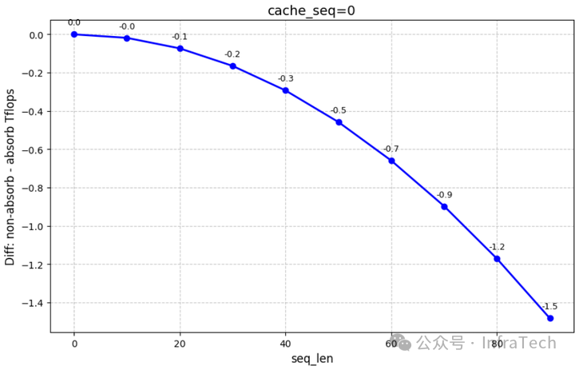
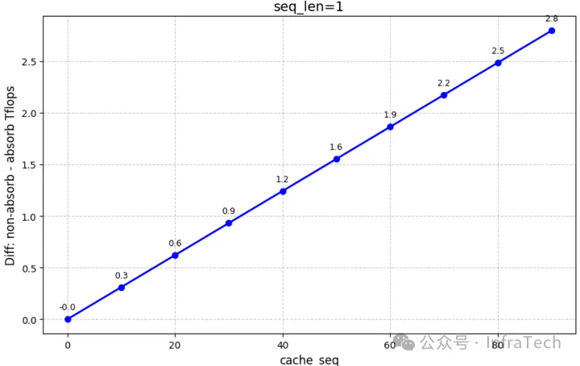
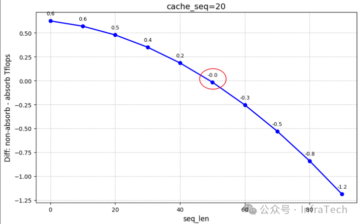
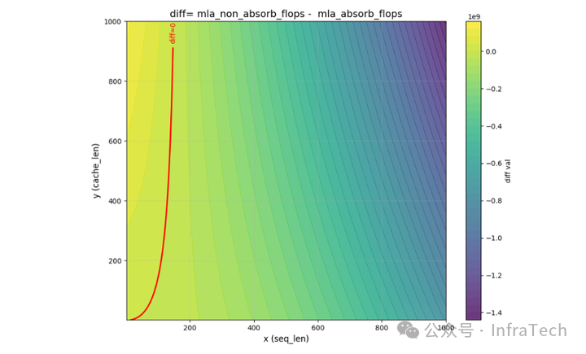
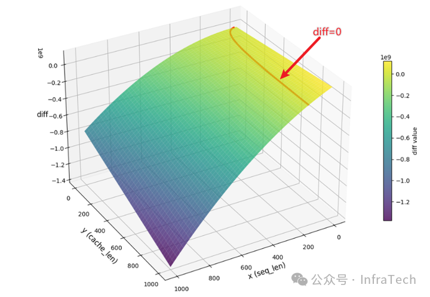
| 场景 | 变量 | diff 符号 | 结论 |
|---|---|---|---|
| Prefill | seq=x, cache=0 | −768x² < 0 | 非吸收更省，x 越大越明显 |
| Decode | seq=1, cache=y | (131072−768)y − 768 > 0（y 大时） | 吸收更省，y 越大越明显 |
| Prefill + prefix-cache | seq=x, cache=y | 随 x 由正转负，存在 diff=0 的临界 x | y 越小越倾向吸收 |
kv_up 是 2*bs*heads*(1+cache_len)*512*256——每次 decode 都要对整条 128K KV cache 上采样；吸收后完全跳过这步（只下行新 token + Q/O 侧各一次小 bmm）。所以 decode 的赢面不是那点 q_absorb 算力，而是 消灭了"每步全量 KV 上采样"。静态显存（权重）：两种形态权重总量不变——只是 KV 上采样权重 W_UK/W_UV 做了 reshape/转置（见 §6），参数不增不减。所以两版加载的 checkpoint 完全相同。
激活值峰值：两版峰值都出现在 attention 阶段，且吸收版 > 非吸收版，序列越长差值越大。原因：吸收版是 MQA，attention 的 head dim = Lkv=512（远大于非吸收的 qk_nope=128），所以注意力中间缓冲更大。
# 非吸收激活峰值（attention 阶段）
qkv_o_non_absorb = 128*seq*(128+64) + 128*(seq+cache)*(64+128+128) + 128*seq*128
# 吸收激活峰值（attention 阶段）
qkv_o_absorb = 128*seq*(512+64) + 128*(seq+cache)*(512+64+512) + 128*seq*512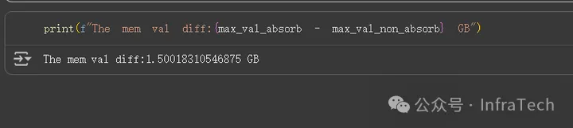
max_val_absorb − max_val_non_absorb ≈ 1.50 GB（文献原图）——量化印证"吸收版激活峰值更高"。# 吸收 kv_b_proj 进入 decode 态：一次性构造 W_UK_T / W_UV
kv_b_proj_weight = get_and_maybe_dequant_weights(self.kv_b_proj, out_dtype=act_dtype)
kv_b_proj_weight = kv_b_proj_weight.view(...)
W_UK, W_UV = kv_b_proj_weight.split(...)
replace_parameter(self, "W_UV", W_UV.transpose(0, 1)) # [Ly...] → 供 O 侧 bmm
replace_parameter(self, "W_UK_T", W_UK.permute(1, 2, 0)) # [N,P,Lkv] → 供 Q 侧 bmm（预转置）
# decode 前向（forward_mqa）：BMM1 在 Q 侧
ql_nope = torch.bmm(mqa_q_nope.transpose(0, 1), self.W_UK_T).transpose(0, 1) # :569-570
# ... attention 后 · W_UV 在 O 侧
torch.bmm(x, self.W_UV, out=out.transpose(0, 1)) # :402# 按 Sq / Skv 比值选路径：
# prefill（Sq/Skv 接近 1）→ compute-friendly → forward_mha（非吸收）
# decode（Sq/Skv 接近 0）→ data-movement-friendly → forward_mqa（吸收）
NOTE：什么算大/小目前由调度器打的 prefill/decode 标签决定，
未来应改按比值动态调（这正是 §4 公式给出的最优判据）。换句话说：vLLM 的实现和这篇文章的 FLOPs 推导殊途同归——代码按阶段硬编码，文章用 diff 公式证明了"这个硬编码就是最优的"。
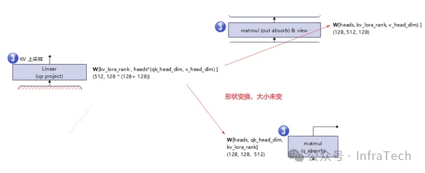
Linear (up project) 的 W[kv_lora_rank, heads*(qk_head_dim+v_head_dim)] 被拆成 matmul (out absorb) 的 W[heads, kv_lora_rank, v_head_dim] 和 matmul (q_absorb) 的 W[heads, qk_head_dim, kv_lora_rank]——参数总数不变，只是 reshape/转置（对照本地代码 kimi_k3/mla.py:350-375 的 W_UK_T=permute、W_UV=transpose）。| 内容 | 位置 |
|---|---|
| 矩阵/符号定义（P/R/V/Lkv） | mla_attention.py:34-63 |
| 选择路径准则（Sq/Skv 比） | mla_attention.py:13-21 |
| 非吸收公式（forward_mha） | mla_attention.py:66-86 |
| 吸收公式（forward_mqa） | mla_attention.py:94-118 |
| chunked context（非吸收 prefill 大 KV 的救兵） | mla_attention.py:121-187 |
| 吸收权重构造（W_UK_T / W_UV） | kimi_k3/nvidia/mla.py:350-375 |
| decode BMM1（Q 侧吸收） | kimi_k3/nvidia/mla.py:569-570 |
| O 侧 W_UV bmm | kimi_k3/nvidia/mla.py:397-402 |
| 非吸收 kv_b_proj 上采样（prefill） | mla_attention.py:2608 |